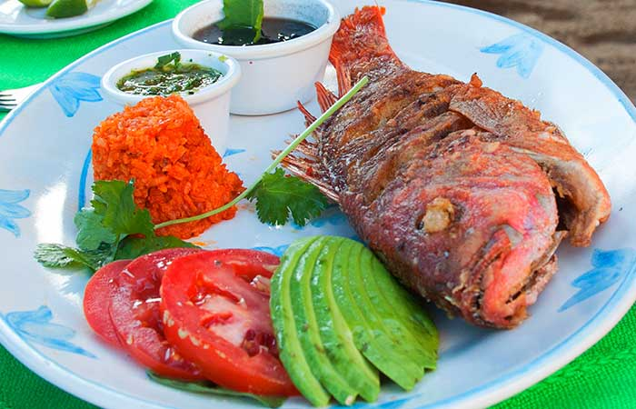
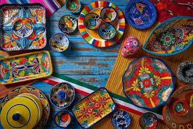
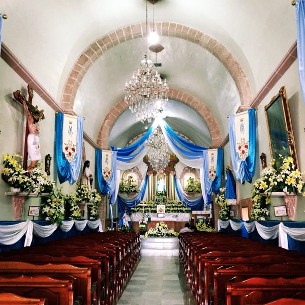

Bienvenido a TurInsta
Cononce los lugares turisticos con los que cuenta el Municipio de Tezontepec de Aldama.Hgo
Lo mas visitado de Tezontepec de Aldama
Balneario Huemac
Cerro del Xicuco
DATO DE TEZONTEPEC
El municipio de Tezontepec de Aldama es uno de los ochenta y cuatro municipios que conforman el estado de Hidalgo en México. La cabecera municipal es la localidad de Tezontepec de Aldama distiguiendolo por su comida,costumbres y sus bellas artesanias.etc

Comida tipica

Atesanias

Costumbres
